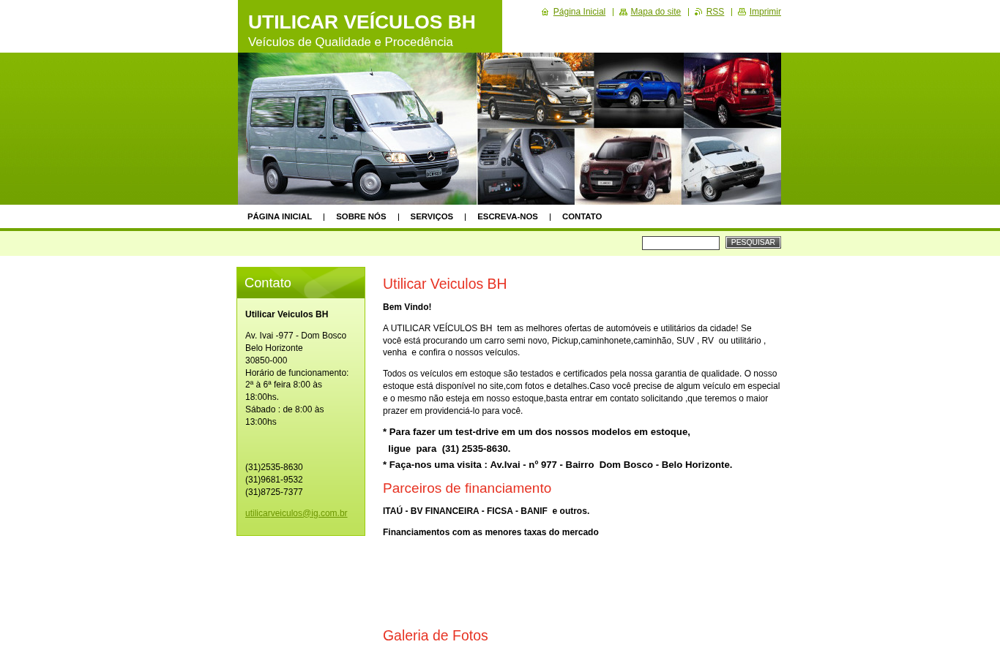
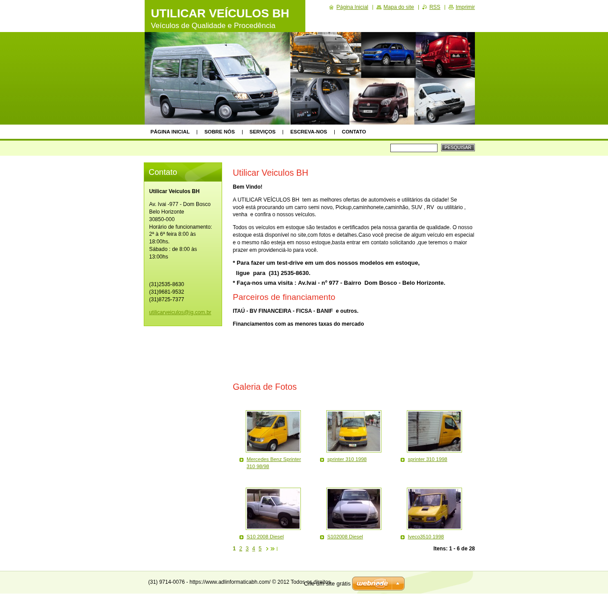

Sistema de Investigação de Marca e Identidade Online
https://utilicarveiculosbh.webnode.page/
Prioridade: MEDIUM · Cenário: B_AMBIGUOUS_COMMUNICATION · Revisão humana: PENDING
A loja de veículos Utilicar Veículos BH cita a BV Financeira de forma puramente textual em uma lista multibanária de parceiros de financiamento, sem utilização de logotipo ou mimetização institucional. Contudo, enquadra-se em comunicação ambígua com necessidade de revisão (REVIEW_REQUIRED) devido à ausência de dados cadastrais societários (CNPJ/razão social) e de declaração de correspondente bancário conforme exigido pela Resolução CMN nº 4.935/2021. [Revisor: CONFIRM] A página pertence a uma loja de veículos (Utilicar Veículos BH) que divulga parceria de crédito mencionando expressamente a 'BV Financeira' ao lado de outros bancos (E-TXT-002). Apesar de o uso ser estritamente textual e sem apropriação visual indevida (E-SHOT-VIEWPORT), o estabelecimento não apresenta CNPJ, razão social, declaração formal de correspondente bancário nem canal de ouvidoria, configurando divulgação de vínculo/parceria sem as devidas salvaguardas regulatórias (Res. CMN 4.935/2021). Mantém-se a classificação de REVIEW_REQUIRED.


| Ref | Tipo | Local | Conteúdo |
|---|---|---|---|
| E-URL | domain | url | URL final: https://utilicarveiculosbh.webnode.page/ (domínio: utilicarveiculosbh.webnode.page) |
| E-DISC-001 | text | search_index | Índice de busca (grounding): webnode.page — **URL:** `https://utilicarveiculos.webnode.page/` | **Uso da Marca:** Em sua página inicial, mantém a seção *"Parceiros de financiamento: ITAÚ - BV FINANCEIRA - FICSA - BANIF e outros"*, prometendo *"financiamentos com as menores taxas do mercado"* | Página hospedada em plataforma gratuita, sem indicação de CNPJ, razão social ou qualquer declaração de credenciamento bancário |
| E-SHOT-VIEWPORT | screenshot | viewport | evidence/Cb22fc3fc51/attempt-1/viewport.png (sha256 670c674c10421932…) |
| E-SHOT-FULL | screenshot | page | evidence/Cb22fc3fc51/attempt-1/fullpage.png (sha256 85626487f59f2f34…) |
| E-TITLE | title | head | UTILICAR VEÍCULOS BH |
| E-CANONICAL | meta | head | https://utilicarveiculosbh.webnode.page/ |
| E-HEAD-1 | heading | page | Veículos de Qualidade e Procedência |
| E-HEAD-2 | heading | page | Utilicar Veiculos BH |
| E-HEAD-3 | heading | page | Parceiros de financiamento |
| E-HEAD-4 | heading | page | Galeria de Fotos |
| E-HEAD-5 | heading | page | Contato |
| E-FOLD | text | viewport (acima da dobra) | UTILICAR VEÍCULOS BH Veículos de Qualidade e Procedência Página inicial Sobre Nós Serviços Escreva-nos Contato Utilicar Veiculos BH Bem Vindo! A UTILICAR VEÍCULOS BH tem as melhores ofertas de automóveis e utilitários da cidade! Se você está procurando um carro semi novo, Pickup,caminhonete,caminhão, SUV , RV ou utilitário , venha e confira o nossos veículos. Todos os veículos em estoque são testados e certificados pela nossa garantia de qualidade. O nosso estoque está disponível no site,com fotos e detalhes.Caso você precise de algum veículo em especial e o mesmo não esteja em nosso estoque,basta entrar em contato solicitando ,que teremos o maior prazer em providenciá-lo para você. * Para fazer um test-drive em um dos nossos modelos em estoque, ligue para (31) 2535-8630. * Faça-nos uma visita : Av.Ivai - nº 977 - Bairro Dom Bosco - Belo Horizonte. Parceiros de financiamento ITAÚ - BV FINANCEIRA - FICSA - BANIF e outros. Financiamentos com as menores taxas do mercado Galeria de Fotos Contato Utilicar Veiculos BH Av. Ivai -977 - Dom Bosco Belo Horizonte 30850-000 Horário de funcionamento: 2ª à 6ª feira 8:00 às 18:00hs. Sábado : de 8:00 às 13:00hs (31)2535-8630 (31)9681-9532 (31)8725-7377 utilicar veiculos @ig.com. br Página Inicial Mapa do site RSS Imprimir |
| E-CTA-1 | cta | page | Pesquisar |
| E-CONTACT-1 | contact | page | utilicarveiculos@ig.com.br <mailto:utilicarveiculos@ig.com.br> |
| E-TXT-001 | text | page | Parceiros de financiamento |
| E-TXT-002 | text | page | ITAÚ - BV FINANCEIRA - FICSA - BANIF e outros. |
| Dimensão | Sinal | Achado | Refs |
|---|---|---|---|
| VISUAL_IDENTITY | LEGITIMATE | Predomínio total da identidade própria da loja de veículos (Utilicar Veículos BH), sem reprodução de elementos gráficos ou paleta do Banco BV. | E-SHOT-VIEWPORT E-SHOT-FULL E-HEAD-1 E-HEAD-2 |
| DECLARED_COMMERCIAL_IDENTITY | CONFUSION | O estabelecimento divulga nome comercial e endereço físico em Belo Horizonte, porém omite CNPJ e razão social. | E-FOLD E-HEAD-5 E-SHOT-VIEWPORT |
| CORRESPONDENT_TRANSPARENCY | CONFUSION | Não há aviso sobre a condição de correspondente bancário independente ou canais oficiais de atendimento/ouvidoria da instituição. | E-TXT-001 E-TXT-002 E-FOLD |
| INSTITUTIONAL_LANGUAGE | LEGITIMATE | Discurso em terceira pessoa tratando a BV Financeira estritamente como parceira de financiamento. | E-TXT-001 E-TXT-002 |
| LOGO_USAGE | LEGITIMATE | Não há aplicação de logotipos (nem atual nem antigo); a menção é exclusivamente textual. | E-TXT-002 E-SHOT-VIEWPORT |
| SERVICE_JOURNEY | NEUTRAL | Jornada focada na comercialização de veículos e utilitários, sem simuladores ou captação de dados para crédito no site. | E-FOLD E-SHOT-FULL |
| CONTACT_CHANNELS | LEGITIMATE | Canais de contato próprios da loja (telefone fixo, celulares de BH e e-mail no provedor IG). | E-CONTACT-1 E-FOLD E-SHOT-VIEWPORT |
| CONSUMER_CONFUSION | NEUTRAL | Baixo risco de o consumidor acreditar estar no canal oficial do banco, embora a natureza da parceria não esteja devidamente regulamentada no texto. | E-SHOT-VIEWPORT E-TXT-002 |
A loja de veículos Utilicar Veículos BH cita a BV Financeira de forma puramente textual em uma lista multibanária de parceiros de financiamento, sem utilização de logotipo ou mimetização institucional. Contudo, enquadra-se em comunicação ambígua com necessidade de revisão (REVIEW_REQUIRED) devido à ausência de dados cadastrais societários (CNPJ/razão social) e de declaração de correspondente bancário conforme exigido pela Resolução CMN nº 4.935/2021.
Nenhum CNPJ ou razão social identificáveis no conteúdo coletado.
| Tipo | Valor | Ref | Contexto |
|---|---|---|---|
| domain | webnode.page | E-URL | |
| utilicarveiculos@ig.com.br | E-CONTACT-1 | ||
| phone | (31) 2535-8630 | E-FOLD | |
| phone | (31)2535-8630 | E-FOLD | |
| phone | (31)9681-9532 | E-FOLD | |
| phone | (31)8725-7377 | E-FOLD |
Mapeamento indicativo para apoio à auditoria. Não constitui conclusão regulatória; a decisão definitiva pertence à auditoria.
Fonte: NORMATIVE
Art. 14. O contrato de correspondente deve estabelecer: [...] II - vedação à utilização, pelo contratado, de logomarca ou de outros atributos que sejam similares aos adotados pela instituição contratante em suas agências, postos de atendimento, sítio eletrônico na internet, aplicativo ou outras plataformas de comunicação em rede;
Evidência observada: E-HEAD-1 E-HEAD-2 E-SHOT-FULL E-SHOT-VIEWPORT E-TXT-002
Fonte: NORMATIVE
Art. 14. O contrato de correspondente deve estabelecer: [...] III - divulgação ao público, pelo contratado, de sua condição de prestador de serviços à instituição contratante, identificada pelo nome com que é conhecida no mercado, com descrição dos produtos e serviços oferecidos e canais de contato da instituição contratante, inclusive de sua ouvidoria, em local visível, em destaque e em formato legível, por meio de: a) sítio eletrônico do correspondente na internet, acessível na página inicial; b) aplicativo e outras plataformas de comunicação em rede do correspondente; [...]
Hipótese: Divulgação ao público da condição de prestador de serviços/parceria ausente, insuficiente, ambígua ou sem destaque. A norma disciplina correspondentes contratados; o responsável não foi identificado como correspondente.
Evidência observada: E-FOLD E-HEAD-5 E-SHOT-VIEWPORT E-TXT-001 E-TXT-002
Informação faltante:
Fonte: NORMATIVE
Art. 3º O correspondente atua por conta e sob as diretrizes da instituição contratante, que assume inteira responsabilidade pelo atendimento prestado aos clientes e usuários por meio do contratado.
Evidência observada: E-CONTACT-1 E-FOLD E-SHOT-VIEWPORT
Se o responsável não for correspondente contratado, os indícios podem caracterizar uso indevido de marca ou fraude, fora do escopo da Res. 4.935: avaliar encaminhamento às áreas jurídica/segurança.
Limitações: requisitos contratuais/internos não fornecidos: mapeamento limitado ao texto normativo
Decisão: CONFIRM → REVIEW_REQUIRED / MEDIUM
A página pertence a uma loja de veículos (Utilicar Veículos BH) que divulga parceria de crédito mencionando expressamente a 'BV Financeira' ao lado de outros bancos (E-TXT-002). Apesar de o uso ser estritamente textual e sem apropriação visual indevida (E-SHOT-VIEWPORT), o estabelecimento não apresenta CNPJ, razão social, declaração formal de correspondente bancário nem canal de ouvidoria, configurando divulgação de vínculo/parceria sem as devidas salvaguardas regulatórias (Res. CMN 4.935/2021). Mantém-se a classificação de REVIEW_REQUIRED.
| Tema | Severidade | Questionamento | Refs |
|---|---|---|---|
| domain_attribution | MEDIUM | Responsável pela página não identificado; a conclusão sobre a marca não pode ser atribuída a um estabelecimento específico. | E-URL |
| Fonte | Consulta / hipótese | URL original | Título / trecho |
|---|---|---|---|
| grounding | Objetivo: Lojas, revendas e correspondentes da região Sudeste que divulgam financiamento da marca.
Execute no Google Search as seguintes consultas (dorks):
- "bv financeira" "bancos parceiros" veículos "Espírito Santo" -site:bv.com.br -site:bancobv.com.br -site:bvfinanceira.com.br -site:bvinvestimentos.com.br -site:napista.com.br -site:bvopen.com.br -site:meufinanciamentosolar.com.br -site:votorantim.com.br -site:vam.com.br -site:reclameaqui.com.br -site:jusbrasil.com.br -site:jus.br
- ("Banco BV" OR "bv financeira") financiamento (loja OR revenda OR correspondente OR promotora) "Espírito Santo" -site:bv.com.br -site:bancobv.com.br -site:bvfinanceira.com.br -site:bvinvestimentos.com.br -site:napista.com.br -site:bvopen.com.br -site:meufinanciamentosolar.com.br -site:votorantim.com.br -site:vam.com.br -site:reclameaqui.com.br -site:jusbrasil.com.br -site:jus.br
- "bv financeira" "bancos parceiros" veículos "Minas Gerais" -site:bv.com.br -site:bancobv.com.br -site:bvfinanceira.com.br -site:bvinvestimentos.com.br -site:napista.com.br -site:bvopen.com.br -site:meufinanciamentosolar.com.br -site:votorantim.com.br -site:vam.com.br -site:reclameaqui.com.br -site:jusbrasil.com.br -site:jus.br
- ("Banco BV" OR "bv financeira") financiamento (loja OR revenda OR correspondente OR promotora) "Minas Gerais" -site:bv.com.br -site:bancobv.com.br -site:bvfinanceira.com.br -site:bvinvestimentos.com.br -site:napista.com.br -site:bvopen.com.br -site:meufinanciamentosolar.com.br -site:votorantim.com.br -site:vam.com.br -site:reclameaqui.com.br -site:jusbrasil.com.br -site:jus.br
- "bv financeira" "bancos parceiros" veículos "Rio de Janeiro" -site:bv.com.br -site:bancobv.com.br -site:bvfinanceira.com.br -site:bvinvestimentos.com.br -site:napista.com.br -site:bvopen.com.br -site:meufinanciamentosolar.com.br -site:votorantim.com.br -site:vam.com.br -site:reclameaqui.com.br -site:jusbrasil.com.br -site:jus.br
- ("Banco BV" OR "bv financeira") financiamento (loja OR revenda OR correspondente OR promotora) "Rio de Janeiro" -site:bv.com.br -site:bancobv.com.br -site:bvfinanceira.com.br -site:bvinvestimentos.com.br -site:napista.com.br -site:bvopen.com.br -site:meufinanciamentosolar.com.br -site:votorantim.com.br -site:vam.com.br -site:reclameaqui.com.br -site:jusbrasil.com.br -site:jus.br
- "bv financeira" "bancos parceiros" veículos "São Paulo" -site:bv.com.br -site:bancobv.com.br -site:bvfinanceira.com.br -site:bvinvestimentos.com.br -site:napista.com.br -site:bvopen.com.br -site:meufinanciamentosolar.com.br -site:votorantim.com.br -site:vam.com.br -site:reclameaqui.com.br -site:jusbrasil.com.br -site:jus.br
- ("Banco BV" OR "bv financeira") financiamento (loja OR revenda OR correspondente OR promotora) "São Paulo" -site:bv.com.br -site:bancobv.com.br -site:bvfinanceira.com.br -site:bvinvestimentos.com.br -site:napista.com.br -site:bvopen.com.br -site:meufinanciamentosolar.com.br -site:votorantim.com.br -site:vam.com.br -site:reclameaqui.com.br -site:jusbrasil.com.br -site:jus.br
Liste de forma abrangente as páginas públicas encontradas (até 12 resultados distintos), informando para cada uma o nome do estabelecimento/perfil, a URL e como a marca é utilizada (destaque visual, título, feirão, simulador, redes sociais e se há ou não identificação clara de CNPJ e condição de correspondente bancário). H5-establishment:regiao-Sudeste | https://utilicarveiculosbh.webnode.page/ | webnode.page **URL:** `https://utilicarveiculos.webnode.page/` | **Uso da Marca:** Em sua página inicial, mantém a seção *"Parceiros de financiamento: ITAÚ - BV FINANCEIRA - FICSA - BANIF e outros"*, prometendo *"financiamentos com as menores taxas do mercado"* | Página hospedada em plataforma gratuita, sem indicação de CNPJ, razão social ou qualquer declaração de credenciamento bancário |
Original: https://utilicarveiculosbh.webnode.page/
Final: https://utilicarveiculosbh.webnode.page/
| Artefato | Caminho | SHA-256 | Bytes |
|---|---|---|---|
| screenshot_viewport | evidence/Cb22fc3fc51/attempt-1/viewport.png | 670c674c10421932e8b374f17f9d9f299a6deb2070e7af8aaf3b882e3b4917b5 | 391907 |
| screenshot_full | evidence/Cb22fc3fc51/attempt-1/fullpage.png | 85626487f59f2f34d38231a33ad4c0e7121e49d663ef3c93f20ff56411282b6f | 540853 |
| html | evidence/Cb22fc3fc51/attempt-1/page.html.txt | 43a01c03391184e745825cb20c4c218d5fee2be89f594a6bb9cd24bdf31776e1 | 31793 |
| text | evidence/Cb22fc3fc51/attempt-1/text.txt | 5dd41c2587fb77473d754f4006edd9f86a36943f09228560c76b9e4d1662477d | 1626 |
| page_data | evidence/Cb22fc3fc51/attempt-1/page.json | f12c3cb360a56c05887d48691ff2e69f0f500fa5c92a5151fe50508b5c33ae6a | 11065 |
| Quando | De | Para | Nota |
|---|---|---|---|
| 2026-11-25T18:12:04+00:00 | DISCOVERED | QUEUED | prioritised (score 2.5) |
| 2026-11-25T18:27:33+00:00 | QUEUED | COLLECTING | |
| 2026-11-25T18:27:40+00:00 | COLLECTING | COLLECTED | |
| 2026-11-25T18:27:40+00:00 | COLLECTED | ANALYZING | |
| 2026-11-25T18:29:05+00:00 | ANALYZING | REVIEWING | |
| 2026-11-25T18:29:12+00:00 | REVIEWING | COMPLETED |